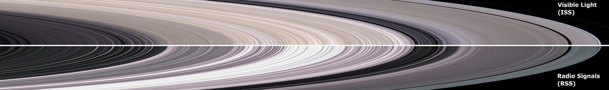
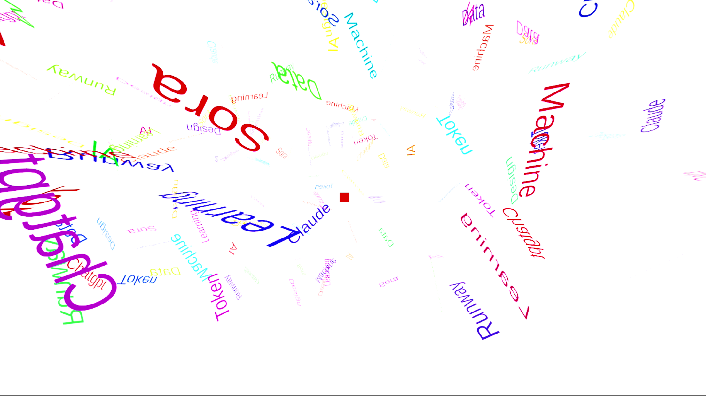

Chart & Information Design

AI Full-Process Experimental Video
Interactive Health & Conceptual Hardware Design
Data Visualization & Hardware
Object Detection & Fashion
Coordinate Archive & Spatial Narrative
Data visualization & Hardware
Graphic Design & Visual Essay
Archival data work
Immersive Spatial & Interactive Experience
Interactive Installation & Optical Visualization
Imagination, Digital Sculpture, and Experimentation
Spatial Interface & Experimental Motion
Motion Capture & Experimental Video
Experimental Video & Digital Ritual